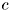
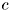

value are always accepted. This implies an ensured downhill movement Guesses that increase may be accepted with a propability
value are always accepted. This implies an ensured downhill movement Guesses that increase may be accepted with a propability  Here
Here  is a temperature constant in the sense of a metropolis choice.
is a temperature constant in the sense of a metropolis choice.[COR87] Corana, A., Marchesi, M., Martini, C., Ridella, S.: Minimizing Multimodal Functions of Continuous Variables with the "Simulated Annealing" Algorithm. in: ACM Transactions on Mathematical Software (13) 3: p.262-280, 1987
This is a relatively simple implementation of the common simmulated annealing method which is a stochastic global search technique that tries to find the minimum of a given function by a Metropolis Monte-Carlo sampling of the parameter space. It allows for a (small) propability to leave a local minimum which prevents the method from beeing stuck in local minima which is generally not possible in standard fitting and minimization methods like the Levenberg-Marquardt-Algorithm as they are strictly local search techniques.
During the search in the parameter space the propability to leave a local minimum is reduced. This is expressed in terms of a "temperature" which defines a measure for the above propability. The name comes from an analogy to metallurgy where the speed of cooldown influences the size of the crystals that form in a material and therefore its properties. If the cooling is slow, large crystal (high magnitude of order) forms in the cold metal, as the long phases of high temperature allow the atoms to diffuse through the metal (brownian motion) and find a place which minimizes their energy. This process is modelled by the simulated annealing method.
A good overview is given in this Wikipedia article.
This pseudocode gives a basic implementaation of the simulated annealing method:
p = init_parameter_guess;
N = 0; // step counter
NT = init_steps_per_temperature;
rT = init_temperature_reduction_coefficient;
T = init_temperature;
do {
p1=neighbor(p); // generate new guess for parameters
if ( chi2(p) ) {
// accept guess p1
p = p1;
} else {
if ( rand() < exp( (chi2(p)-chi2(p1)) / T ) ) {
// accept guess p1, although it does not improve chi2
p = p1;
} else {
// reject guess p1
}
}
N = N + 1;
if ( N > NT ) {
// reduce temperature
NT = 0;
T = T * rT;
}
} while (not converged);
return p, chi2(p);
In this code we do not explain how to check convergence and how to
generate a new guess. Here the latter is done by a function neighbor(p)
which chooses a new vector p1 which is in the vicinity of p. The first
if ensures that guesses that reduce the value are always accepted. This implies an ensured downhill movement Guesses that increase may be accepted with a propability Here is a temperature constant in the sense of a metropolis choice.
The algorithm from [COR87] may be denoted like this:
 is described by M parameters
is described by M parameters  . All parameters are provided with bounds for their value, i.e.
. All parameters are provided with bounds for their value, i.e. 
![\[ \chi^2(\vec{p})=\sum\limits_{i=1}^N\frac{\bigl(y_i-m(\tau_i, \vec{p})\bigr)^2}{\sigma_i^2} \]](pic/form_213.png)
i.e. it finds the solution to the minimization problem
![\[ \min\limits_{\vec{p}}\chi^2(\vec{p}) \]](pic/form_214.png)
for a given set of N measurements 
 and 
and 


 (iteration counter)
(iteration counter) times:
times: . The
. The  count the accepted variation steps of the n-th parameter.
count the accepted variation steps of the n-th parameter. generate a new guess
generate a new guess
![\[ \vec{p}'=\vec{p} + r\cdot v_n\cdot\vec{e}_n \]](pic/form_225.png)
here ![$ r\in[0..1] $](pic/form_226.png) is a uniformly distributed random number and
is a uniformly distributed random number and  is a vector where all elements are zero, except element n which is one (unit vector in direction n)
is a vector where all elements are zero, except element n which is one (unit vector in direction n)
 then accept the new vector, i.e.
then accept the new vector, i.e.  and
and  , if even
, if even  then also accept the new guess as optimal point, i.e.
then also accept the new guess as optimal point, i.e.  and
and  with a metropolis probability
with a metropolis probability  for
for  by 1
by 1 :{p}
:{p}
![\[ v_n'=\begin{cases}v_n\cdot\left(1+c\cdot\frac{V_n/N_S-0.6}{0.4}\right) & V_n>0.6\cdot N_S\\ v_n\cdot\frac{1}{1+c\cdot\frac{0.4-V_n/N_S}{0.4}} & V_n<0.4\cdot N_S\\ v_n& \text{otherwise}\end{cases} \]](pic/form_251.png)

 where
where  is the
is the  value of the i-th convergence check. This means that the change between two subsequent iterations may not exceed
value of the i-th convergence check. This means that the change between two subsequent iterations may not exceed 
Thsi algorithm uses random numbers generated by the Mersenn Twister Method, implemented here: http://www-personal.umich.edu/~wagnerr/MersenneTwister.html.